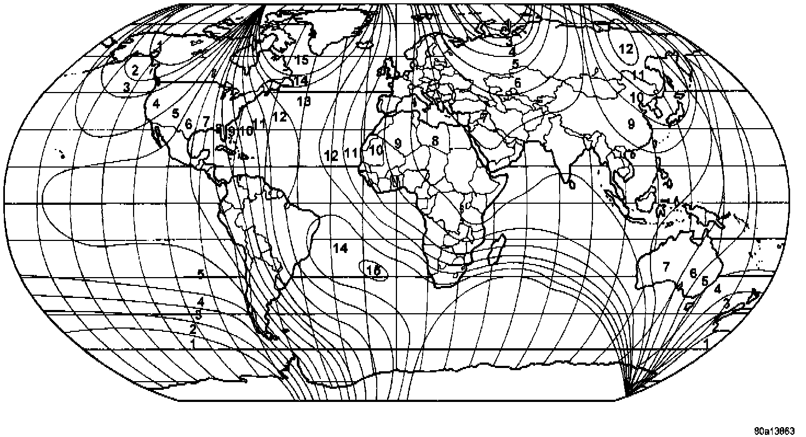

Compass Variation Adjustment
Variance is the difference between magnetic north and geographic north. In some geographic locations, the difference between magnetic and geographic north is great enough to cause the compass to give false readings. If this problem occurs, the compass variance must be set.To set the compass variance:
Variance Settings:

1. Using the Variance Settings map, find your geographic location and note the zone number.
2. Turn the ignition switch to the On position. If the compass/temperature data is not currently being displayed, momentarily depress and release the Step button to step through the display options until you have reached the compass/temperature display.
3. Depress both the U.S./Metric, and the Step buttons. Hold the buttons down until "VAR" appears in the display This takes about five seconds.
4. Release both of the buttons. The current variance zone number setting will appear in the display.
5. Press and release the U.S./Metric button to step through the zone numbers, until the zone number for your geographic location appears in the display.
6. Press the Step button to enter this zone number into the compass unit memory.
7. Confirm that the correct directions are now indicated by the compass.